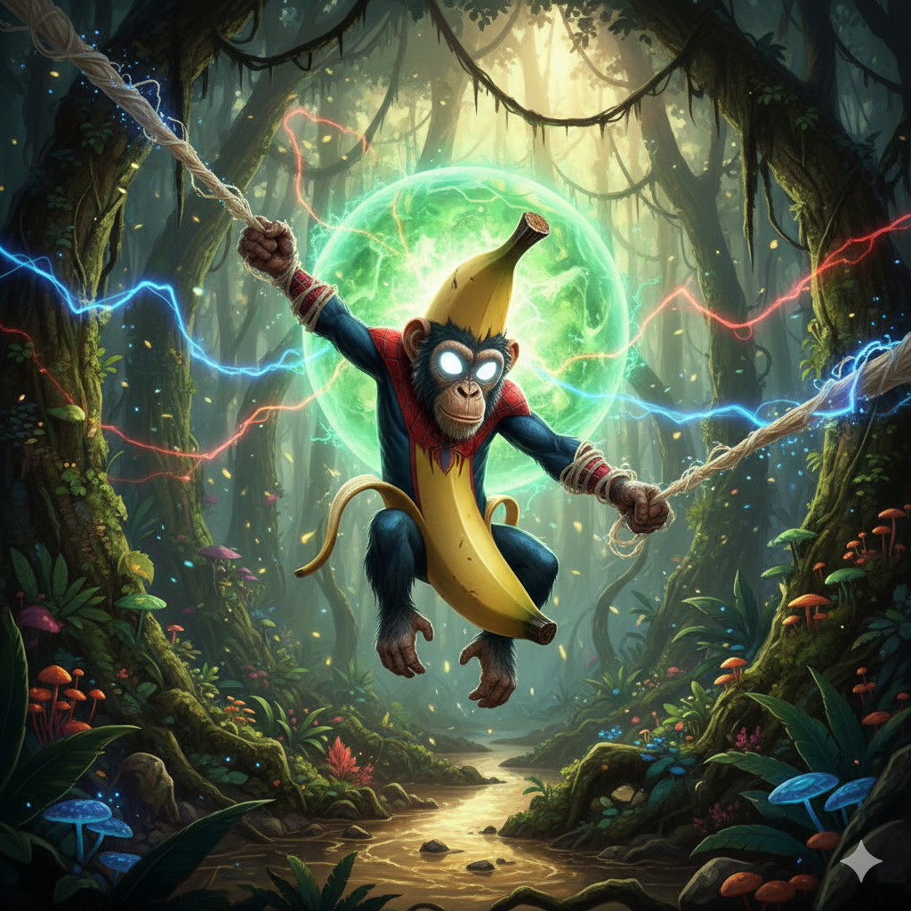

|  |
นายดุษฎีพร หวลคะนึง
สาขาเทคโนโลยีดิจิทัลและสารสนเทศ
ตำแหน่ง 1.2-1
สถาบันการจัดการปัญญาภิวัฒน์
|
เหตุผลที่อยากเรียน Full stack web development
- อยากเรียนรู้หลายๆ ภาษา
- อยากลองเขียนเว็บเอง
- อาจารย์ที่สอนหน้าตาดีครับ
ความคาดหวังต่อวิชานี้
- อยากเขียนเว็บเป็น
- อยากเอาไปต่อยอดในอนาคต
- อยากมีงานทำครับ ;-;
จุดอ่อนที่ตนเองต้องพัฒนาเกี่ยวกับทักษะ Programming และแนวทางการพัฒนา
-
โลจิก
- ฝึกฝนบ่อยๆ
- พยายามศึกษาอย่างสม่ำเสมอ
-
ยังเรียนรู้ภาษาไม่มากพอที่จะสามารถทำงานได้ดี
- ศึกษาให้เยอะกว่านี้
- พยายามตามโลกให้ทัน
| Java Programming ⭐⭐⭐⭐ |
English ⭐ |
| SQL ⭐⭐⭐ |
日本語 ⭐⭐⭐ |
| ภาษาไทย ⭐ |
About me
ชื่อโอม นายดุษฎีพร หวลคะนึง มาจากอุดรธานี จบสายภาษาญี่ปุ่น แล้วมาเรียนต่อโค้ด
Experience
ตอนมอ4ขึ้นมอ5ไปฝึกงานที่ อ.บ.ต 1เดือน ตอนขึ้นปี1 ไปทำงาน 7-11 3เดือน
contact
github